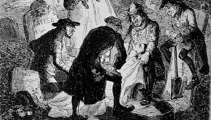
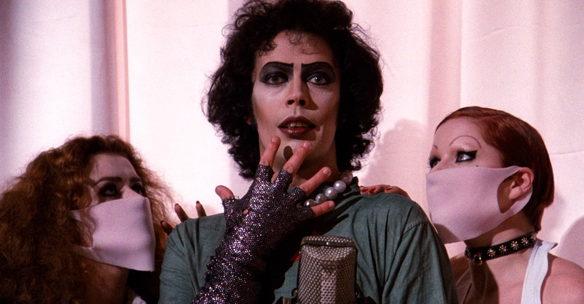

Criminal deviance plays a significant role in the Frankenstein narratives (pieces of work that follow the general narrative trajectory or feature elements of Frankenstein). Especially, in the original works as the criminality of Victor Frankenstein and his creature’s actions are a significant contributor to the meaning of Frankenstein. Numerous studies have been performed surrounding the aspects of criminal deviance in Frankenstein and its progenies. For example, Tim Marshall examines the body-snatching phenomena and subsequently Victor’s tendency for grave-robbing (Quigley), arguing that
medical autopsy serves as a central symbol of the theme of creation versus destruction that permeates Frankenstein and many of the other stories, the reanimation of the dead physically in the form of the creature compares to the metaphorical reanimation of the corpse as a teaching tool (Quigley).
Similarly, Victor’s remarkable lack of ethics has been thoroughly examined by Alison Kavoy. Victor’s actions are undoubtedly ethically questionable as his creation hinged upon his ability to use recently deceased bodies (obtained through body-snatching) that were “unable to give consent” and experimentation on animals, both of which are illegal and thus criminally deviant. Furthermore, Kavoy contends that the creature’s “murderous rampage” results from the lack of relationship between the creature and Victor and thus partially absolving the creature of blame as his actions stem from Victor (Kavoy). In contrast, Rocky Horror Picture Show’s depiction of criminal deviance is less prevalent than in Frankenstein. Indeed, while RHPS features horrendous acts of murder, cannibalism and unethical experimentation, the acts tend to get glossed over by the flamboyant singing and comedic script (Tyson). Though, one criminally deviant act that does not get “glossed over” is the devastating murder of Frank which is explicitly shown as “heterosexual society” acting out in fear “of sexual deviancy” (Eberle-Sinatra). Altogether, criminal deviance in Frankenstein narratives tends to question ethics and responsibility.
However, if one considers reactions to criminal deviance in the texts, a different meaning is produced. I think that the presence of deviance in the texts is a commentary on the futility of retribution and how it generally only benefits the few. This is an especially prevalent theme in Frankenstein due to the false conviction of Justine for William’s murder. Elizabeth, in particular, draws attention to the horrible nature of retribution and unjustness of the trial by stating that retribution causes “greater and more horrid punishments ... to be inflicted than the gloomiest tyrant has ever invented to satiate his utmost revenge (Shelley, 62).” Despite the support of Elizabeth, Justine was still convicted and executed for a crime she did not commit. The idea that retribution only benefits the few is suggested through examining the job of the executioner’s belief in performing a “great deed” to society when in fact “their hands reek with … blood” and the suffering of many. While the executioner is rewarded for his “great deed to society” the family is still suffering. Frankenstein clearly shows that despite Justine, the supposed murderer, being killed, the family of the dear departed experienced no relief (61). The Frankenstein family house was still a “house of mourning”, Alphonse’s (Victor’s father) health was “deeply shaken” due to the horror of the events and Elizabeth was “sad and despond[ent] ... no longer [a] happy creature”(66). Clearly, the presence of retribution in Frankenstein demonstrates that seeking vengeance only benefits the few, such as the executioners and in the case of Justine, murderers who have escaped the grasp of justice. Therefore, it is clear that retribution did not help the grieving process and that perhaps “eye for an eye” justice should not prevail. Rocky Horror Picture Show comments on retribution and “eye for an eye” justice, but unlike Frankenstein, Rocky Horror takes a slightly different spin on retribution. In RHPS, retribution is shown through RiffRaff’s murder of Frank being depicted as a victory due to the fact that they “never liked [him]”. RiffRaff killing Frank is then spun as necessary in order to protect society from Frank’s “extreme lifestyle” (Rocky Horror). After the murder of Frank, Columbia and Rocky (a murderer, conspirator, and unnatural creation) Magenta and RiffRaff are rewarded for the supposedly just actions by finally being allowed to go back to their homeworld of Transexual in the Transylvania Galaxy. Nonetheless, while Frank’s murder (and by extension Columbia’s and Rocky’s) is portrayed as beneficial for Magenta and RiffRaff, the majority of characters are either not affected or dead. Janet, Brad, and Dr. Scott all leave the castle and presumingly continue with their lives unaffected by Frank N Furter’s death, whereas Columbia and Rocky, two other primary characters, die protecting Frank. Evidently, the RiffRaff’s retribution for his treatment only benefited his sister and himself. Thus, based upon the texts, Frankenstein narratives argue that retribution is futile and only beneficial to the minority.
Deviancy in sexuality is highly prevalent throughout Frankenstein narratives. For example, in the original works Victor, as well as, Walton and the creature are read as queer or at least homosocial. Michael Eberle-Sinatra argues that “Walton’s relationship to Victor in the novel can be read as an instance of repressed homosexuality” and that Victor and the creature have “a homoerotic tension [underlying] the incestuous bond” (Eberle-Sinatra). James Holt McGavran also contends that there exists a homoerotic tension between Victor and his creature, explaining that Victor’s “excited attraction” caused him to create the creature (McGavran). Gordon D. Hirsch and David E. Musselwhite even suggest that “the language used to describe the making of the Creature ... suggests masturbation” (Eberle-Sinatra). Similarly, RHPS revolves around sexual deviancy and non-conforming sexual identity. According to Eberle-Sinatra the “sexual dimension of The Rocky Horror Picture Show is one of the most obvious and most discussed aspects of the film.” He further argues that RHPS uses a “bisexual approach to the characters’ sexuality, which opens their minds to an array of confusing possibilities” and that it “allows the viewer to supplement several conventional elements present in mainstream cinema by other, less strictly defined categories of sexual identity, gender relationships, and identification with a range of minority group including Goths, bikers, and gay” (Eberle-Sinatra). Similar to McGavran’s interpretation of Victor’s motives, Frank N Furter creates Rocky (his version of the creature) for an “exclusively sexual purpose” (Eberle-Sinatra). Likewise, Eberle-Sinatra argues that Rocky Horror advocates “sexual liberty” through Frank N Furter, at least until “the norms of heterosexual society reassert themselves upon the straight characters of Brad, Janet, and Dr. Scott” and kill “the openly bisexual characters of Frank, Columbia, and Rocky”. Another important factor of sexual deviancy in Frankenstein and Rocky Horror is, as Miranda Butler states, the representation of the “repress[ion] of female sexual desire" and “the connection between Mary Shelley’s “waking dream” of monster-manufacture and her own experience of awakening sexuality” (Butler). All in all, Frankenstein narratives tend to contain homoerotic tensions between characters and repression of desires.

It is interesting to note that examining both texts in conjunction can produce another meaning. I believe that if one analyzes the characters and their relationships in the narratives, it is clear that both texts are primarily queer and argue for acceptance of homosexuality, despite societal reaction. For example, Rocky Horror Picture Show is clearly revealed to be a primarily queer film through the song “Sweet Transvestite” in which Frank, one of the main characters, is revealed to be a transvestite- a clear violation of heterosexual norms. Over the course of the plot, Frank proceeds to build a physically attractive creature “good for relieving [his] tension”, seduce Brad and Janet, and in general “gives [himself] over to pleasure” (Rocky Horror). While the excessive queerness of Frank is evident, the argument for acceptance is clearest in the journey of the stereotypical heterosexual American sweetheart couple, Brad and Janet. Over the course of the plot, Janet, who was originally sexually inexperienced and repressed, is “released” from her repression once she deviates from societal norms (“Rose Tint My World,” Rocky Horror). Similarly, once Brad is seduced by Frank he finds enjoyment in feeling “sexy” dressed in the traditionally female garments of lingerie and fishnets. In essence, Brad and Janet, the traditional couple, are “released” from societal norms and finally allowed to be themselves and to be “confident” and open-minded (“Rose Tint My World”). The use of the term “release” is significant as it suggests being set free from an oppressive force, in this case, heterosexual norms. If Rocky Horror was arguing for compliance with social norms, Janet and Brad’s transition would be conveyed as corruption or deviant instead of as freedom and acceptance. However, Frankenstein conveys its queerness and argues for acceptance in a different manner. The source of the most evident queerness in the novel is Victor. Victor is evidently queer, his internalized homophobia and repression manifests at various points throughout the novel such as his desire to create life without the involvement of a woman. Another instance of repression is Victor’s decision to create a male creature. I believe that Victor’s decision to make a male creature was the manifestation of his subconscious desire to express his homosexuality. Indeed, the process of creating a female creature would have been similar, thus his lack of conscious decision to create a male creature is suspect. Homosexuality is further suggested by Victor pouring his “heart and soul” into the creation of the creature. A clear contrast to Frank’s solely sexual purpose for the creature. The fact that Victor invested so much time and love into his creation is evocative of the hopes and feelings he had for the creature. In contrast, Victor’s relationship with Elizabeth, his cousin and betrothed, is lacklustre. Victor describes Elizabeth as a “summer insect” and states that he “loved to tend on her, as [he] should on a favourite animal” (Shelley, 20). Describing the person you supposedly love as a “summer insect” is not indicative of romantic love. Especially if you are “tending” on them like a “favourite animal” as being in love generally does not resemble the love one has with an animal. Elizabeth and Victor’s relationship is further cast into doubt after Elizabeth dies. I would think that if Victor was truly in love with Elizabeth, he would have at least thought of using his knowledge to revive her after she died. Instead, Victor becomes fixated on his creature and full of self-loathing and guilt for not realizing the truth of the creature’s threat of “being there on his wedding night” (131, 154). His refusal to acknowledge the threat to Elizabeth the creature posed and his lack of attempts to revive her show that Elizabeth was not someone with whom he was in love, simply a convenient facade to hide his repressed homosexuality. Perhaps, Elizabeth would not have died if Victor was accepting of his true self as the creature’s threat would not have come to fruition. I would even argue that if Victor was without internalized homophobia and repression, he might not have acted immediately repulsed by the object of his fascination and fantasy, his creature, living. Consequently, it is possible the murders of William, Clerval, and Justine would not have occurred. Altogether, Frankenstein narratives are primarily queer and encourage acceptance of one’s sexual identity.
Thus, the meaning of Frankenstein and the Rocky Horror Picture Show is that they area commentary on growing societal numbness to tragedy; the futility of retribution and how it only benefits the few; societal reception to homosexuality; or accepting your sexual identity regardless of societal reactions depending on the approach and deviancy of focus. Meaning is relative to the method used to analyze and the focus of the analysis in the text and thus the meaning of Frankenstein narratives change depending on the approach. Therefore, Frankenstein is both a commentary on accepting a queer identity and the dangers of deviance from the norm. It is reflective of society at the time it was produced and of modern society and each meaning that can be derived is equally valid. A work can contain competing meanings or no meaning at all, a lack of meaning has no effect on the intelligibility of the work. The perception that meaning is singular is a fallacy, the meaning of a work is as varied and diverse as the people reading it and it can always change.
Works Cited
Butler, Miranda. "Sf double feature: Mary Shelley’s awakening sexuality and the Rocky Horror Picture Show, 1975 and 2016." Science Fiction Film and Television, vol. 11 no. 2, 2018, pp. 160-161. Project MUSE. Accessed 17 March 2019
Eberle-Sinatra, Michael. "Readings of Homosexuality in Mary Shelley's Frankenstein and Four Film Adaptations." Gothic Studies, vol. 7, no. 2, 2005, pp. 185. Accessed 13 March 2019
Eisen, Lauren-Brooke, and Oliver Roeder. “America's Faulty Perception of Crime Rates.” America's Faulty Perception of Crime Rates | Brennan Center for Justice, 16 Mar. 2015, www.brennancenter.org/blog/americas-faulty-perception-crime-rates.
Gordon D. Hirsch, ‘The Monster was a Lady: On the Psychology of Mary Shelley’s
Frankenstein’, Hartford Studies in Literature, 7/2 (1995), 126; Accessed 13 March 2019.
Kavey, Allison B. "Daddy Issues: Parental Consent and Scientific Responsibility in Shelley's Frankenstein." Literature and Medicine, vol. 36, no. 2, 2018, pp. 495. Accessed 16 March 2019
Mahnke, Aaron. “Episode 43: Supply and Demand.” Lore, Lore, 19 Sept. 2016, www.lorepodcast.com/episodes/43.
McGavran, James H. "'Insurmountable Barriers to our Union': Homosocial Male Bonding, Homosexual Panic, and Death on the Ice in Frankenstein." European Romantic Review, vol. 11, no. 1, 2000, pp. 46, www.summon.com. Accessed 18 March 2019
David E. Musselwhite, Partings Welded Together: Politics and Desire in the Nineteenth-Century English Novel (London and New York: Methuen, 1987), pp. 62–4. Accessed 13 March 2019
Quigley, Christine. Tim Marshall, "Murdering to Dissect: Grave-Robbing, Frankenstein and the Anatomy Literature" (Book Review). vol. 11, Oxford University Press, Oxford, 1998. Accessed 17 March 2019
Sharman, Jim, director. The Rocky Horror Picture Show. Twentieth Century Fox Home Entertainment F1-SGB-3216301040, 1975.
Shelley, Mary Wollstonecraft, and Susan J. Wolfson. Mary Wollstonecraft Shelleys Frankenstein, or, The Modern Prometheus. Pearson Longman, 2007.
Tyson, Christy, et al. "Our Readers Write: What is the Significance of the Rocky Horror Picture show? Why do Kids Keep Going to it?" The English Journal, vol. 69, no. 7, 1980, pp. 60-62. Accessed 17 March 2019
U.K. Parliamentary Papers (ProQuest). ProQuest (Firm), 2018. Web. Accessed 17 March 2019
Wright, David, and Lisa Wright. Scottish Murders. Lomond Books, 2011.
See research on Docs